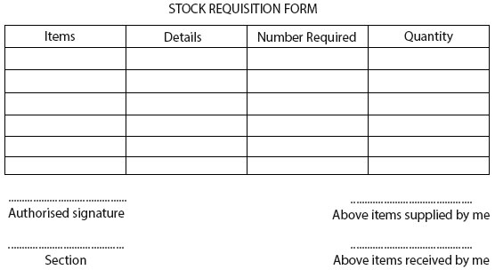

STORE RECORDS

Store records can be defined as the organised information about the items kept in a store or warehouse.
This includes details like what items are received, what is sold, and how much stock is available. It helps keep track of everything in the store.
PROCEDURE FOR STORE RECORDS
-
When items arrive, check them against the purchase order. Record the details, including item description, quantity, and condition, in the store records.
-
Add the received items to the inventory system. Adjust stock levels to reflect the new quantities available in the store.
-
Place items in designated storage locations. Label shelves or bins for easy identification and record their locations in the store records.
-
When items are sold, update the store records to reflect the quantity sold. Deduct the sold items from the inventory to keep stock levels accurate.
-
Regularly perform stock counts to verify the accuracy of store records. Compare physical stock with the recorded quantities and adjust any discrepancies.
-
Record any returned items in the store records, including reasons for returns. Update inventory levels accordingly.
-
Keep all store records organised and easily accessible. Regularly back up digital records and securely store physical documents.
-
Periodically review inventory reports to analyse stock levels, identify trends, and make informed decisions about reordering or discontinuing items.
STORE REQUISITION
Store requisition can be defined as a formal document used to request items or supplies from a store or inventory. It typically includes details such as the description of the items needed, the quantity required, the purpose of
the request, and the authorisation from a relevant supervisor or department.
USES OF STORE REQUISITION
-
Store requisitions are used to formally request specific items or supplies needed for operations or projects within an organisation.
-
They help to track the movement of goods in and out of the store, aiding in managing stock levels and preventing shortages.
-
Store requisitions provide a clear process for obtaining approval from relevant authorities before items are issued, ensuring accountability.
-
They serve as the official records of what items were requested, the quantity needed, and the purpose, helping maintain accurate records.
-
By tracking requisitions, organisations can monitor spending on supplies and ensure they stay within budget.
-
Using store requisitions streamlines the process of obtaining supplies, making it easier for staff to request what they need without confusion.
STORE STEER TAKING
Store steer taking can be defined as the management process of guiding and directing the
activities and operations within a retail store. This includes overseeing aspects
such as inventory control, staff performance, customer service, and sales strategies.
The goal of store steer taking is to ensure the store operates efficiently,
meets its sales targets, and provides a positive shopping experience for customers.
IMPORTNCE OF STEER TAKING
-
Steer taking ensures that the store is well-managed, leading to smooth operations and efficient use of resources.
-
By guiding staff in providing excellent service, steer taking helps enhance customer experiences, leading to repeat business.
-
It helps in maintaining the right amount of stock, reducing waste and ensuring products are available when customers need them.
-
A clear direction in sales strategies can lead to higher sales figures and improved profitability for the store.
-
Steer taking involves setting clear goals and expectations, which can motivate staff and improve overall performance.
-
It allows the store to respond effectively to market changes, customer demands, and competition, ensuring long-term success.
-
Proper steer taking helps manage budgets and expenses, contributing to the store's financial stability and growth.
DELIVERY NOTES AND GATE PASS
Delivery notes can be defined as documents issued by a seller to a buyer that
outline the items being shipped.
They usually contain details such as the item descriptions, quantities, and any associated order numbers.
Gate pass can be defined as a document that permits the entry or exit of goods
or individuals from a facility, such as a warehouse or store.
It typically includes information like the name of the person or vehicle,
the reason for the visit, and a list of items being taken or delivered.